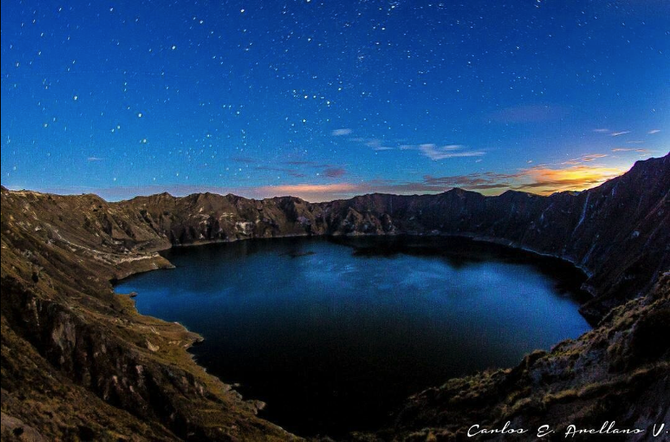
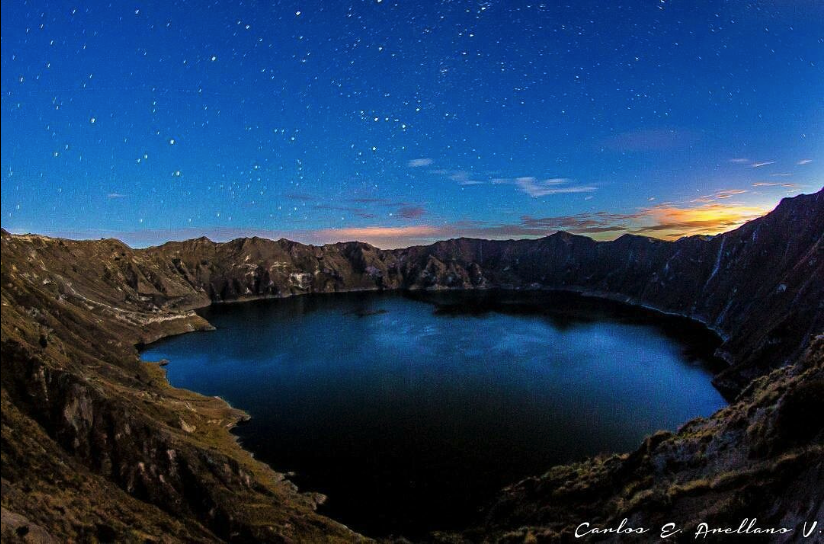

Si alguna vez la vida te lleva a la provincia de Imbabura, cerca de Otavalo, Ibarra o Cotacachi, no te olvides de pasar por la maravillosas lagunas sagradas cercanas a la zona (son más de 20 pero aquí 3 de las que me deleitaron) y les comparto un relato de estas esplendorosas fuentes de vida y sabiduría, revitalizadoras de espíritu y reanimadoras de energía.
La primera parada se encuentra en las proximidades del volcán Imbabura, el magnífico lago San Pablo magnetiza con su interminable resplandor y majestuosidad; si no fuese por las montañas que se ven en el horizonte, pareciera un brazo de mar sobrepuesto en las alturas. Luego la magnificente Cuicocha, te dejará sin aliento. La altura de más de 3,000 mts, ha hecho que historiadores se preguntaran, ¿cómo llegó a formarse una laguna a tal altura? El descubrimiento fue asombroso, la laguna es un cráter volcánico que hasta el día de hoy se encuentra activo. Finalmente, la llegada a Yaguarcocha también es esplendoroso por sus aguas cristalinas, aunque más juguetona. Botecitos de pedal esperan a la orilla para un paseo por sus aguas llenas de misterio.
Un gusto enorme porder compartir con ustedes mi nombre es Milton nací en Quito Ecuador, soy un amante del facinante mundo de sistemas, llevo dos años laborando en este gran mundo del desarrollo de software, actualmente soy desarrollador de sistemas y programador freelance.
Hermoso archipiélago de origen volcánico, se encuentra formado por 13 islas y 47 islotes. Se ubica a 600 millas de la costa ecuatoriana y es el lugar de nacimiento de nuevas y características especies. Su aislamiento y los factores de temperatura en aguas frescas, debido a la localización ecuatorial, han motivado la creación de una gran diversidad de vida en este archipiélago.
Caminar alrededor de las islas se convierte en una aventura, mientras te mueves en torno a una gran variedad de animales, que sorprendentemente no tiene ningún temor hacia los seres humanos y te hacen sentir como pertenciaras allí. La increíble experiencia de caminar alado de un león marino, una iguana, un piquero de patas azules, entre otros al punto que casí podrías tocarlos, es una sensación increíble que rápidamente se convirtió en habitual en nuestro día a día.
 
